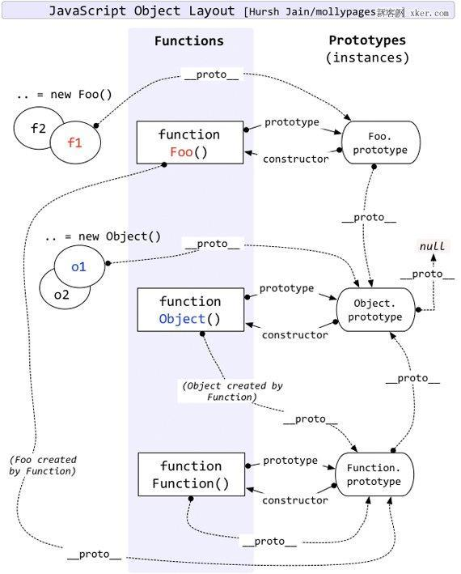

javascript通过构造函数(constructor)和原型链来(prototype chain)实现其他面向对象语言的类概念。ES6语法中引入了“类”(class)的概念，但只是一个语法糖，只是对原来方式的封装。
1、构造函数(constructor)
a、为了区别与普通函数，构造函数首字母大写
b、构造函数内部有一个this指针，指向当前对象的实例
c、使用new关键字创建一个实例
d、同一个对象的多个实例之间都可以拥有自己的属性和方法，但是它们之间无法共享属性
function Person(name) {
this.name = name;
this.sayHello = function () {
console.log('hello world');
}
}
let person = new Person('liuhw');2、原型和原型链
a、只有函数才有prototype属性，对象实例只有__proto__属性，因为函数是Function的对象实例，所以函数也有__proto__属性
b、函数的prototype为原型对象，原型对象也是普通对象，所以跟普通对象实例一样，它的__proto__也指向Object.prototype
c、函数的__proto__指向Function.prototype，Function.__proto__也指向Function.prototype，Function.prototype.__proto__指向Object.prototype
d、最终Object.prototype.__proto__ == null，到达原型链的终点
具体如图：
